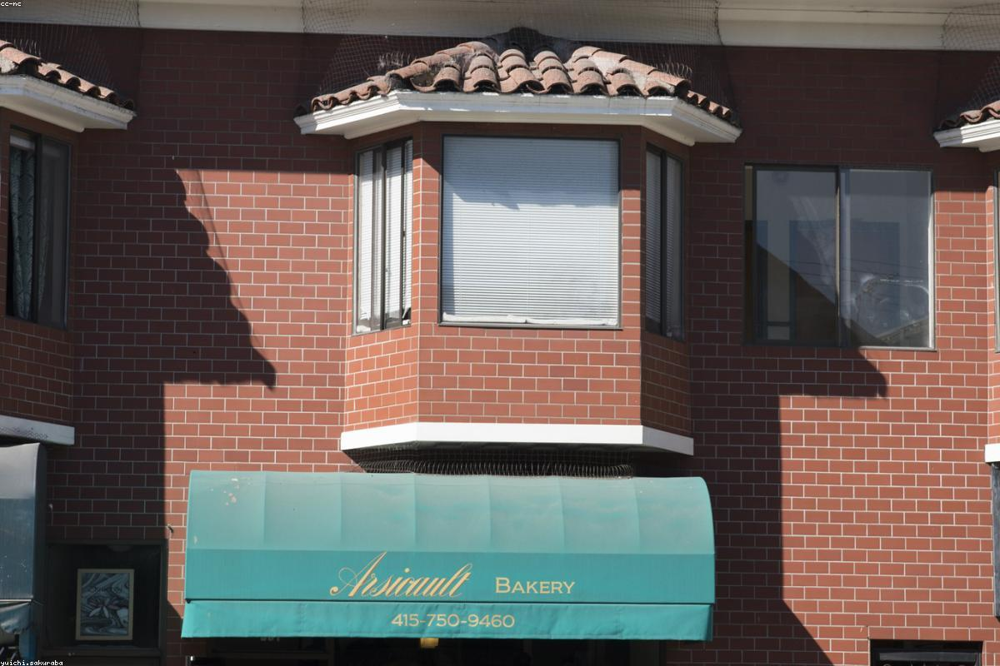

★★★★★
«Лучший луковый суп в городе, без преувеличения. Уютно так, что не хочется уходить — сидели с бокалом розе до самого закрытия.»
Верхне-Волжская набережная · Нижний Новгород
Французская домашняя кухня
в сердце города — неспешно, тепло, с бокалом вина.
notre histoire
Provence родился из простого желания — привезти в Нижний Новгород тёплый, ленивый юг Франции. Тот самый, где время замедляется, на столе всегда стоит ваза с лавандой, а соседи здороваются по имени.
Мы готовим домашнюю прованскую кухню: томлёные овощи, ароматный луковый суп, золотистые киши и свежую выпечку каждое утро. Карта вин — небольшая, но честная, с акцентом на розе из Прованса и красные с долины Роны.
Заходите на завтрак с круассаном, оставайтесь на неспешный ужин с бокалом вина. У нас тихо, тепло и пахнет печёным тестом — как дома.

отзывы гостей
«Лучший луковый суп в городе, без преувеличения. Уютно так, что не хочется уходить — сидели с бокалом розе до самого закрытия.»
«Заглянули на завтрак за круассаном — остались на полдня. Тёплая атмосфера, вкусный кофе и очень внимательные ребята. Теперь это наше место.»
«Рататуй и утиное конфи — как в маленьком кафе где-то в Провансе. Вид на набережную, свечи, неспешный вечер. Влюбились.»
comment nous trouver
Верхне-Волжская набережная, 8
Нижний Новгород
В двух шагах от Чкаловской лестницы, с видом на Волгу. Ищите вывеску с веточкой лаванды.
Связаться с намиcontact
Верхне-Волжская набережная, 8
Нижний Новгород, 603155
Пн–Чт · 09:00 — 23:00
Пт–Сб · 09:00 — 01:00
Вс · 10:00 — 23:00